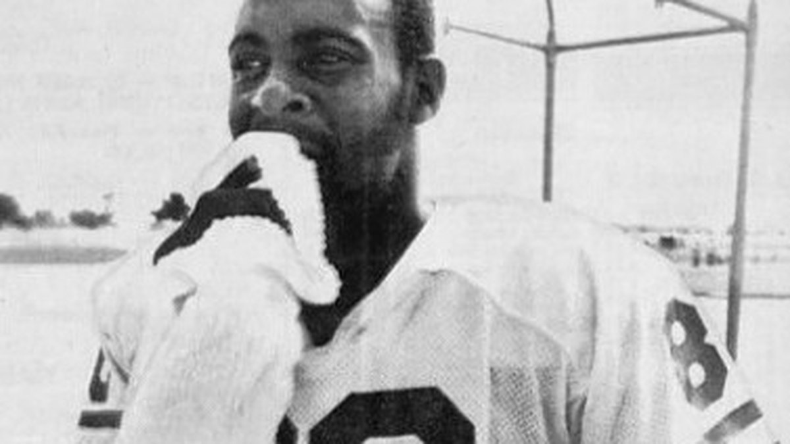
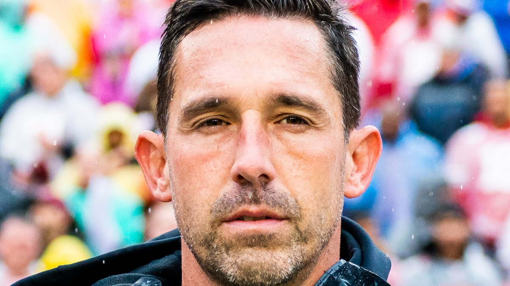
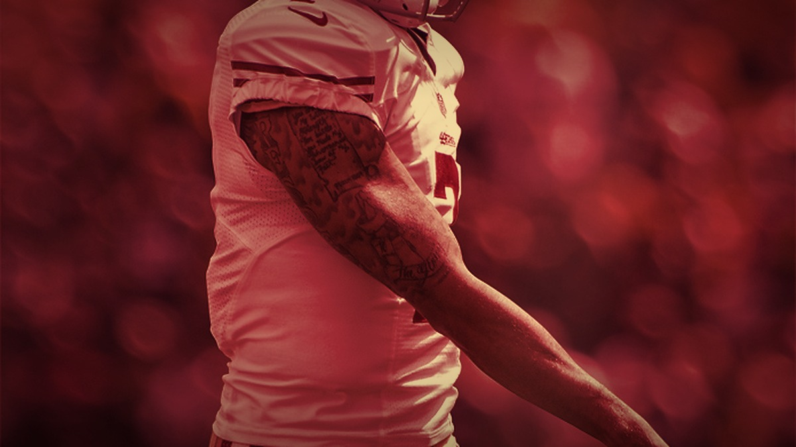
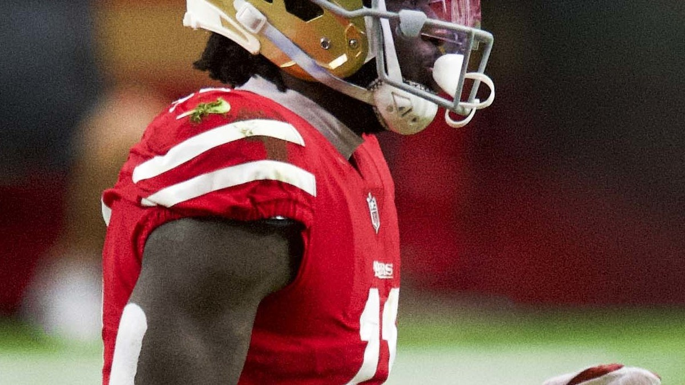

San Francisco 49ers news, analysis, opinion, and Sunday storylines from Bay Area Sports Blog.
49
"I think this is the year for the Niners." At Lake Tahoe, the greatest 49er ever called his shot for 2026: the statement is to win it all. The drought started in January 1995, and he hung the last banner.

Purdy, a healthy McCaffrey, Mike Evans and Christian Kirk, and Bosa and Warner back from injury. The deepest roster of the Shanahan era. If they stay healthy, this could finally be the year.

A 29-year-old Super Bowl quarterback with a 16-to-4 touchdown-to-interception season, and thirty-two teams suddenly forgot how to sign a QB. It was never about talent.

Aiyuk was one of the 49ers' cleanest success stories. Since the Super Bowl loss to Kansas City, it turned into something much stranger.
Five Super Bowls with Montana, Rice, and Young. The gold standard of a generation.